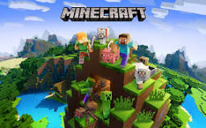

Trailer GTA IV
Postagem 5 de Dezembro de 2023O aguardado lançamento de Grand Theft Auto VI (GTA 6) tem gerado uma onda de especulações e expectativas entre os fãs da série, que aguardam ansiosamente pelo próximo capítulo da franquia. Desde o seu anúncio, uma série de curiosidades e rumores tem circulado, aumentando ainda mais a ansiedade pelo jogo. Uma das maiores curiosidades sobre GTA 6 é a sua ambientação. Diversas fontes sugerem que o jogo retornará à icônica Vice City, uma recriação fictícia de Miami, já explorada em Grand Theft Auto: Vice City, lançado em 2002. No entanto, há também rumores de que o jogo incluirá outras cidades, potencialmente expandindo o mapa para uma escala continental, com diferentes locais para explorar.
Leia maisMinecraft
Postagem 5 de Junho de 2024 Minecraft, o icônico jogo de construção em blocos, é um fenômeno cultural que transcendeu as barreiras dos videogames desde seu lançamento. Criado pelo desenvolvedor sueco Markus Persson, mais conhecido como "Notch", Minecraft teve sua primeira versão pública liberada em 17 de maio de 2009. A jornada de Minecraft, desde um projeto independente até se tornar um dos jogos mais vendidos e influentes de todos os tempos, é uma história fascinante de inovação e criatividade.
Ler maisNotícias recentes
Produtora do jogo atualizou data de lançamento do aguardado jogo. Publicado em 17 de maio de 2024 às 07h54. A Take-Two (2K) anunciou que o esperado GTA VI será lançado do outono de 2025 no hemisfério norte.
Atualização Do Mine
A próxima atualização 1.21 de Minecraft, chamada Tricky Trials, está prevista para meados de 2024. Além de implementar diversos ajustes nos elementos já existentes no jogo, esta versão introduzirá novos blocos, como o "Crafter", uma ferramenta movida a Redstone que pode ser configurada para criar itens automaticamente.